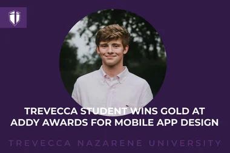
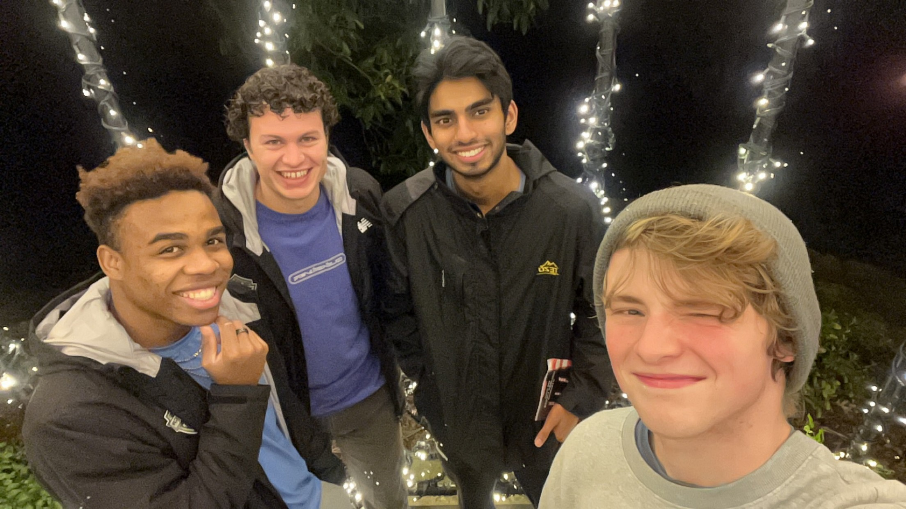

Read my story – From class project to award-winning app design.

My interest in technology began long before attending university. Growing up, I was fascinated by computers and the technology behind the games I enjoyed playing. As my curiosity grew, I started tweaking my PC, modding games, and discovering how different systems worked together. That curiosity eventually led me to pursue a degree in Information Technology and continues to drive my passion for learning today.
At Trevecca Nazarene University, I earned my degree in Information Technology with a concentration in Specialized Computing while gaining hands-on experience through technical projects and an IT internship. Since graduating, I've continued building my technical skills by earning the Microsoft Certified: Azure AI Fundamentals (AI-900) certification and taking on freelance work. My interests continue to grow in data, artificial intelligence, analytics, and software, and I'm always looking for opportunities to learn, explore emerging technologies, and continue growing both personally and professionally.
When I'm away from the computer, I'm a huge movie fan, which unexpectedly inspired one of my favorite UX design projects. I enjoy finding inspiration in unexpected places and bringing that creativity into the way I approach problem-solving. Thanks for stopping by, and I hope you enjoy exploring my portfolio!
Designed the software architecture for a hands-free campus parking application using arc42 documentation, C4 diagrams, and Architectural Decision Records (ADRs). The project focused on creating a scalable solution that integrated campus SSO, sensor and camera data, backend APIs, and live and historical databases to support real-time parking availability while emphasizing clear system design, documentation, and architectural decision-making.